SLOOP 3
SLOOP 3 SLOOP 3 for the M-VAVE FM-1
Make music on a pocket groovebox
This guide takes you from switching on to a finished song. It assumes you know what a beat and a chord are, and nothing about the FM-1.
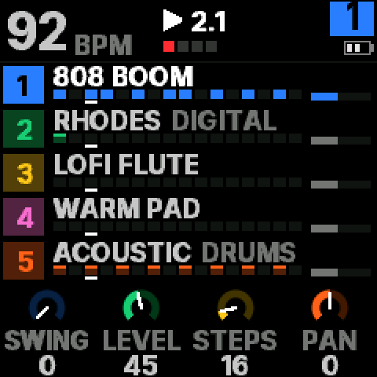
Start here
What SLOOP is
The FM-1 is a small synthesizer by M-VAVE with a screen, eight knobs, fourteen buttons and 27 keys. SLOOP 3 is free firmware that replaces its factory software and turns it into a groovebox: an instrument that plays drums, bass and chords together in a loop, while you build the loop up one part at a time.
You'll use two tools:
- The FM-1 itself, for everything you play and most of what you edit.
- The web editor, a page in Chrome or Edge that connects over USB. It does what's easier on a big screen: loading your own samples, editing notes with a mouse, and backing up. See the editor tour.
SLOOP 3 is still being tested. Back up before you install and before big changes, and report bugs you find.
The FM-1 at a glance
Four groups of controls. Tap a label to read more.
- 1Left knobs: MASTER volume, SELECT (tempo or page), PRESETS (sound), ALGORITHM (track)
- 2OCT− / OCT+: the keys' octave, undo and redo with EDIT
- 3The screen: what you're editing, and what the four knobs do
- 4KNOB 1–4: the four values at the bottom of the screen
- 5Page buttons: FX, SEL, ENV, LFO, EDIT, GLO
- 6HOME, SAVE, ARP, SEQ, and PLAY / REC
- 727 keys: 16 white (F3 to G5) and 11 black
The keys are also 16 buttons
Most of the time the keys play notes. When you hold a button such as SAVE or GLO, the 16 white keys become 16 switches, and the screen draws them as a 4 × 4 grid of tiles. Key 1 is the lowest white key.
Read the screen
The main screen is called TRACKS. Press HOME from anywhere to come back to it.
- 1Tempo in BPM. Turn SELECT to change it.
- 2Play position: bar and beat. ▶ when playing.
- 3Pattern playing on the selected track, and the battery below it.
- 4The five tracks: number, sound, engine. The selected one is highlighted. Turn ALGORITHM to pick another.
- 5Each track's notes, one mark per step, and its level meter.
- 6The knob row. Each dial matches KNOB 1 to KNOB 4 under it: here SWING, the track's LEVEL, STEPS and PAN.
Every page works the same way
The top line names the page. Four values sit at the bottom, one per knob. Turn the knob under a value to change it.

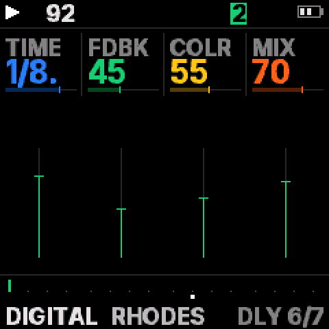

Messages
- Small changes (a value, a sound's name, a hint) show in the page's title line for 1.5 seconds, underlined in yellow.
- Things that matter show in a window at the top: green for a save or a confirmation, red for an error.

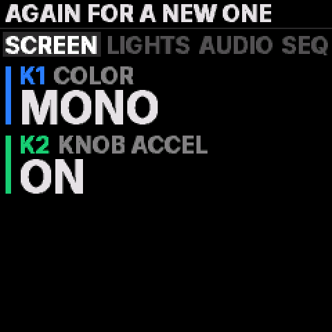
Tap for pages, hold for layers
Most buttons have two jobs. Tap a button to open its pages. Hold it to change what the keys and knobs do. Learn this and the rest of the FM-1 follows.
Tap to open pages
Tap a button to open its first page, and tap it again for the next one. The corner shows where you are, for example 2/7. You can also turn SELECT to move between pages.
Each button reopens the page you used last.
Hold to open a layer
Hold a button and the keys and knobs do something else until you release it. The screen shows each key's new job as a tile.
To keep a layer open with both hands free, hold its button and tap HOME. Press any other button to close it.
| Button | Tap to open | Hold for |
|---|---|---|
| EDIT | The sound's pages, then SOUNDS | ERASE: Erase notes, one key at a time |
| FX | Effect pages | PUNCH: Add an effect while you hold a key |
| SEL | Key, scale and chord pages | KEY: Press a key to set the song's key |
| ARP | Arpeggiator pages | ROLL: Repeat a held note in time |
| SEQ | NOTES, PATTERN and SONG | STEPS: Place notes on the 16 steps |
| GLO | Global settings | MIX: Mute, solo and balance the tracks |
| SAVE | The SONG screen | Patterns: Switch, chain or save patterns |
| HOME | TRACKS (on TRACKS, the visualizer) | The menu |
| ENV, LFO | Envelope and LFO pages | No layer |
To change the tempo while you hold a layer, turn SELECT. It also sets the tempo on any button that has only one page.
Tracks, patterns and songs
Four words you'll see everywhere.
- Track
- One instrument part. Tracks 1–4 are synths, track 5 is drums. Turn ALGORITHM to choose which track the keys play and the pages edit.
- Step
- One slot in time. With the default 16 steps, a step is a sixteenth note and 16 steps make one bar.
- Pattern
- A loop of steps for one track. Each track has 8, so you can switch between a verse and a chorus.
- Song
- A list of lines that plays patterns in order. Optional: many people just play patterns live.
What's kept, and when
SLOOP keeps two copies of your work, and it helps to know the difference.
Edit as much as you like: SLOOP autosaves what's playing a couple of seconds after you stop touching it. But when you switch to another pattern, the one you left goes back to how it was last saved. Save a pattern before you leave it. See Save and load.
Task
Start your first project
A new FM-1 running SLOOP 3 starts with a demo project. Listen to it first, then start your own.
Switch on and turn MASTER up gently. The SLOOP logo draws itself, then the TRACKS screen opens.

Press PLAY to hear the demo. Press it again to stop.
Turn ALGORITHM and play the keys: you hear each track's sound in turn.
Hold HOME and press key 3 (NEW). The screen asks you to confirm.
Do it again: hold HOME, press key 3. You now have an empty project with a sound on each track.
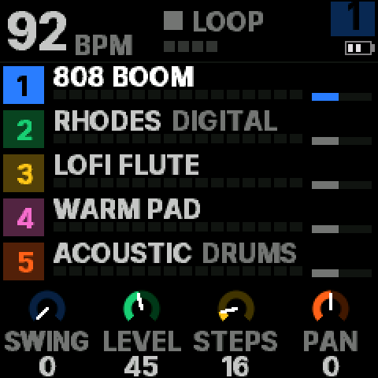
Set the tempo. On TRACKS, turn SELECT. Then pick sounds and record a loop.
The FM-1 keeps one project. Starting a new one replaces it after you confirm. To keep the demo, save it as a file first with the web editor.
Task
Pick and favourite sounds
Hundreds of sounds, sorted by category: FAVS, BASS, KEYS, ORGAN, PAD, LEAD, PLUCK, STAB, FX, YOURS (sounds you've saved) and DX7 (if you've loaded DX7 voices). On the drum track, the categories are kits.
Pick a track with ALGORITHM.
Quick way: turn PRESETS. The sound changes and the SOUNDS page shows where you are. It closes by itself after 4 seconds.
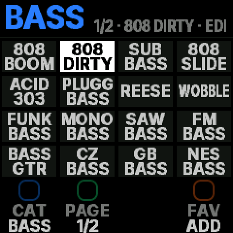
Browse way: tap EDIT until you reach SOUNDS, its last page. The 16 tiles are the 16 white keys: press a key to take that sound and hear it.
Black keys play the current sound without changing it.

Change category with KNOB 1, and page with KNOB 2 or SELECT.

Make it a favourite: turn KNOB 4 right. A yellow dot marks it. Favourites are the first category, FAVS, so you can reach them fast. Turn KNOB 4 left to remove it, and on FAVS use KNOB 3 to reorder.
The Sound tab lists every sound with a search box. The Library tab renames, reorders and files your 32 saved sounds.
Task
Record a loop
Recording works like a looper: the pattern keeps going round and every pass adds what you play.
Pick a track with ALGORITHM and press PLAY.
Press REC. The track turns red and recording starts at once.

Play. Each note lands on the nearest step. Keep playing on the next passes to add more: a note played again where one already is replaces it, so repeating a chord doesn't stack it up.

Press REC again to stop recording. The loop keeps playing.
Start from silence
Press REC while stopped and SLOOP waits for you (REC READY). Your first note starts the loop and becomes step 1.
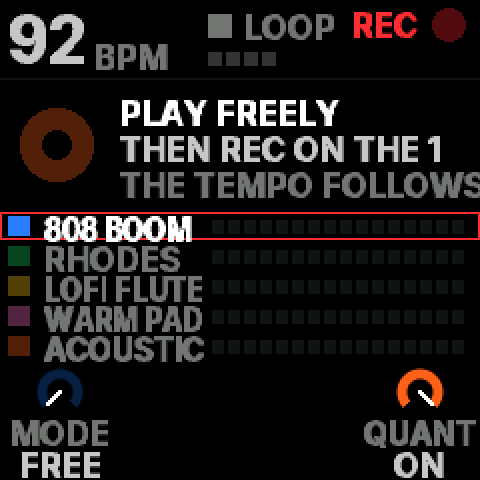
| Knob | Sets |
|---|---|
| MODE | Empty project only. FREE: the tempo follows you. TEMPO: record at the tempo set. |
| LENGTH | The loop: 1, 2 or 4 bars |
| START | NOTE: your first note starts it. COUNT: PLAY gives one bar of clicks first. |
| QUANT | ON: notes snap to steps. OFF: keeps your exact timing. |
The free take
On an empty project, press REC and just play, with no click. When you've played your bars, press REC on the "1" after the last one. SLOOP works out the tempo from how you played and makes a 1, 2 or 4-bar loop.
Fix mistakes
| To | Do |
|---|---|
| Undo (3 levels) | EDIT + OCT− |
| Redo | EDIT + OCT+ |
| Erase one note or drum sound | EDIT + its key. While playing, it erases as the loop passes. |
| Erase the whole track | Hold REC for 2 seconds. Undo brings it back. |
Hear a click while you record: GLO, then CLICK to REC (only while recording) or ON.
Task
Write and edit notes
Two ways to place notes by hand: the NOTES piano roll for melodies, and the STEPS layer for quick on/off steps.
The NOTES piano roll
Tap SEQ. NOTES shows the pattern as bars on a piano roll. The note you're editing is outlined in white.

Pick a step with STEP, then press keys to write notes there. Keys pressed together make a chord. Let go and it moves to the next step.
Fine-tune with NOTE (pitch), LEN (length in steps) and FORCE (ghost, soft, normal, hard, accent). PRESETS zooms between 8 and 64 steps. Tap EDIT to delete the note.
Hold OCT+ for the note's sheet: SLIDE, NUDGE (fine timing), FILL, MOVE, COPY, DELETE. KNOB 1 picks a row, KNOB 2 sets it, OCT+ does it, OCT− closes the sheet.
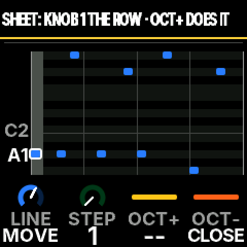
The STEPS layer
Play a note so SLOOP knows which one to place. Then hold SEQ: the 16 white keys are the 16 steps of the page, and lit tiles have notes.
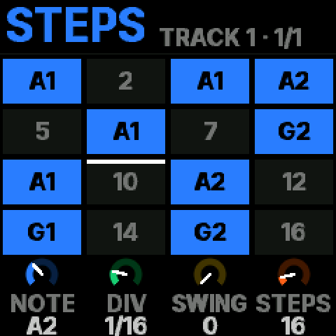
Press a key to add a note on that step, and again to clear it. Hold a step and turn a knob to edit just that step. With no step held, the knobs set the track's DIV (step length), SWING and STEPS (pattern length).
Set the pattern's length and feel
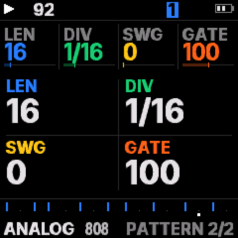
Tap SEQ until the screen shows PATTERN. The four knobs set how the selected track's pattern plays.
| Knob | What it sets |
|---|---|
| LEN | How many steps play before the pattern loops [1–128, default 16] |
| DIV | How long each step lasts, from 1/32 to 2 bars [default 1/16]. Choose 1/8 to play the pattern at half speed. |
| SWG | Swing: how late every second step plays, for a looser groove [0–100, default 0] |
| GATE | How long notes sound, from 10% to 200% of their written length [default 100] |
The Sequencer tab is a full piano roll: draw, drag and stretch notes with the mouse, set velocity and conditions, and import or export MIDI files.
Task
Program drums
The drum track plays a kit of 16 sounds, one per white key: kick, snare, hats and so on. You can record drums live like any track, or place hits on the grid.
Select track 5 with ALGORITHM. Turn PRESETS to choose a kit.
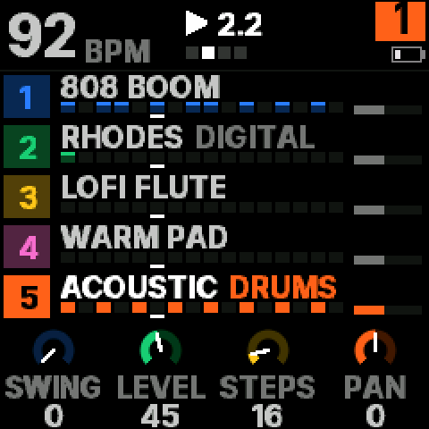
Tap EDIT to open the DRUMS grid: each row is a sound, each column a step.

Pick a sound with a black key or SOUND. Then press white keys to set or clear its 16 steps. OCT− and OCT+ move between pages of 16 steps.
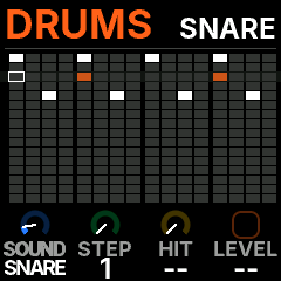
Shape a hit: pick it with STEP, set its LEVEL, or hold OCT+ for its sheet: RATCHET (repeats within the step), NUDGE, FILL, MOVE, COPY, DELETE.
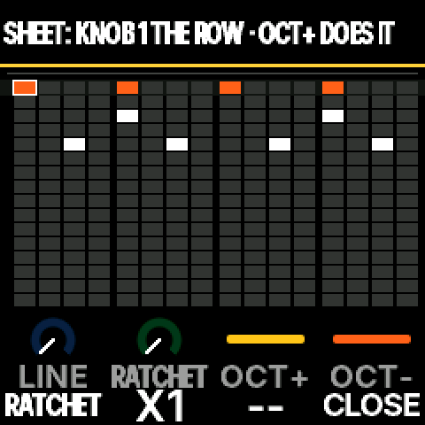
Tap EDIT again for KIT (kit, level, reverb, pan), then once more for SOUND, where each of the 16 sounds gets its own TUNE, DECAY and LEVEL.
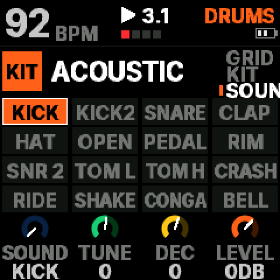
Play drums live
- Hold OCT− while you hit for softer ghost notes, OCT+ for hard hits.
- Hold ARP and hold a key for a roll in time, such as a hi-hat roll. RATE sets its speed. Rolls record as ratchets.
- Hold EDIT and hold a key while playing to erase that sound as the loop passes.
The Drum kit tab tunes each pad, and Drum synth builds your own synthesised kits (SYN1–4).
Task
Shape a sound
Every sound is built by an engine (analog, FM, sampler and others) and shaped by an envelope and an LFO. You don't need to know synthesis to start: turn a knob and listen.
EDIT: the engine
Tap EDIT for the engine's own pages. They change with the engine: an analog sound has WAVE and FILTER, an FM sound has ALG and ratios.

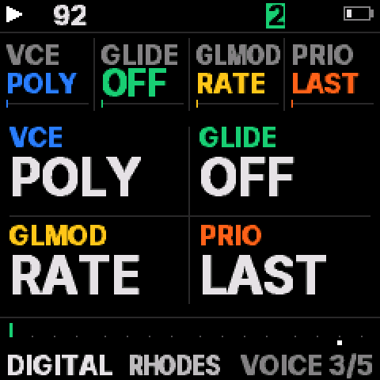

ENV: how a note starts and ends
Tap ENV. Four values draw the envelope's shape:
- ATK attack: how fast the note fades in
- DEC decay: how fast it falls to the sustain level
- SUS sustain: the level while you hold the key
- REL release: how long it rings after you let go
Tap ENV again for ENV DEST, where the envelope can also move the filter (FLT), pitch (PIT) or shape (SHP).
LFO: movement
Tap LFO. An LFO is a slow wave that moves something up and down: vibrato on pitch, a wah on the filter, a tremolo on the volume. Set its RATE and WAVE, then tap LFO twice more for LFO DEST, where you choose how much it moves pitch, filter, shape and amp.

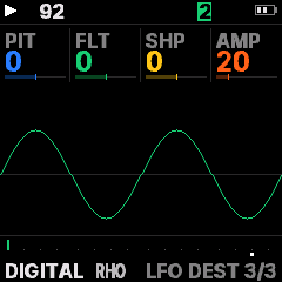
Keep the sound
A sound you've shaped lives in the project. To reuse it in other projects, save it to one of your 32 places: tap SAVE on a sound's page, step to USER, pick a SLOT and turn SAVE. It then shows in the YOURS category.
The Sound tab shows all 48 values of a sound as knobs, with A/B compare, copy and paste, and RANDOM.
Task
Add effects
Effects come in two kinds: ones you set and leave, and ones you play live.
Set-and-leave: the FX pages
Tap FX. The first page sets how much of the selected track goes to each shared effect: DST distortion, CHO chorus, DLY delay, REV reverb. Tap again for the track's own filter, slicer and insert effects, then the delay and reverb themselves.
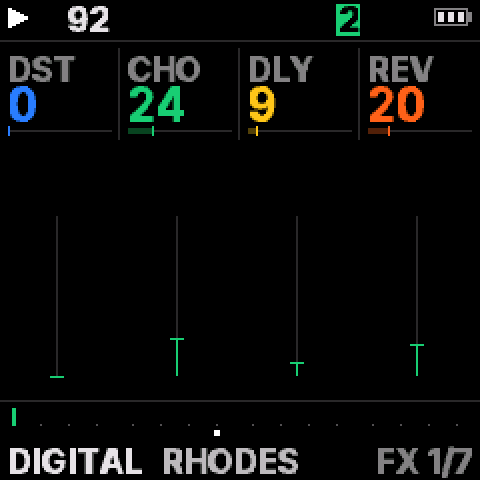


Play live: the PUNCH layer
Hold FX. The tiles show 27 effects, one per key (white and black): stutters at 1/4 to 1/32, reverse, tape stop, filters, bitcrush, echo and more.

Hold a key for its effect on the whole mix. Let go and it stops. Nothing is recorded, so experiment freely.
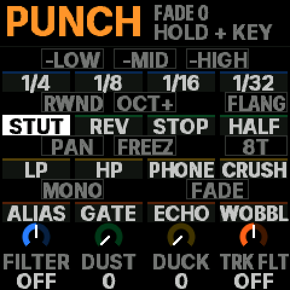
While holding FX, the knobs are a DJ filter (FILTER), vinyl dust (DUST), sidechain pumping (DUCK) and a filter on just the selected track (TRK FLT). OCT− throws everything into the reverb, OCT+ into the delay.
Task
Mix tracks
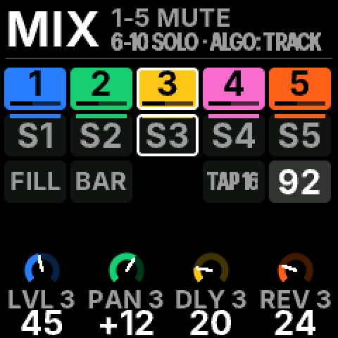
Hold GLO for the MIX layer, one column per track.
- keys 1–5 mute tracks 1–5
- keys 6–10 solo them
- key 11 FILL plays fills while held, key 12 BAR plays a fill on the next bar
- The TAP tile taps the tempo
- ALGORITHM picks a track, and the knobs set its LVL, PAN, DLY and REV
On TRACKS, LEVEL and PAN set the selected track directly. MASTER is the overall volume.
The Mixer tab has every track's level, pan, drive and sends, plus the shared delay, reverb and chorus. The LIVE tab adds faders, meters and 8 mix scenes you can morph between.
Task
Play chords, scales and arps
Set the key
Hold SEL for the KEY layer, then press a key to set the song's key, for example D.
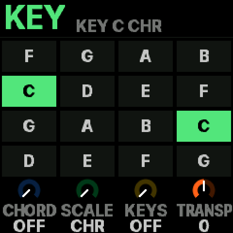
Still holding SEL, turn SCALE (major, minor and others), then KEYS: SNAP rounds every key to the scale, WHITE puts the scale on the white keys, so you can't hit a wrong note.
One finger, one chord
Hold SEL and turn CHORD (TRIAD, 7TH and more). Each white key now plays a full chord of the key, and the black keys change the chord's colour. Tap SEL twice for SEL 2: STRUM spreads a chord's notes like a guitar, VLEAD keeps chord changes smooth.
Arpeggiator

Tap ARP and turn MODE away from OFF. Hold a chord and SLOOP plays its notes one by one, in time: RATE sets the speed, OCT the range, GATE the note length. Tap again for swing, probability and HOLD (keeps going after you let go).
Task
Save and load
Read what's kept, and when first. In short: what plays is autosaved, but each of the 8 patterns only changes when you save into it.
Save a pattern
Hold SAVE. Tiles 1–8 are the patterns. The one playing is lit.

Keep holding, and hold a pattern's key for 1.5 seconds. Its tile fills up.

A green ✓ SAVED confirms it. The project is saved with it. Saving over a pattern that already has notes asks you to press once more.
Switch patterns
Hold SAVE and tap a pattern key. While playing, it switches at the start of the next bar (the tile turns yellow while it waits). key 15 chooses whether this changes all tracks or only the selected one.
Save, open or start a project
| To | Do |
|---|---|
| Save the project | HOME + key 5, or tap SAVE twice on TRACKS for PROJECT and turn SAVE |
| Go back to the saved project | HOME + key 1 (OPEN), or PROJECT's LOAD |
| Start an empty project | HOME + key 3 twice, or PROJECT's NEW |

The FM-1 holds one project, with room for all 5 tracks × 8 patterns × 128 steps. Keep as many more as you like as files on your computer with the web editor.
Task
Chain patterns and build a song
Once you have a few patterns saved, put them in order.
Chain: play patterns in turn
Hold SAVE and tap several pattern keys without letting go, for example 1, 1, 2, 3. Let go and they play in that order, round and round.
Record a song by playing
Hold SAVE and press key 14 (SONG REC). From the next bar, every pattern you switch to, and for how long, is written into the song.
Play your arrangement by switching patterns (SAVE + a pattern key). Press key 14 again, or stop, to finish.
Play the song: hold SAVE and press key 13 to switch from LOOP to SONG, then PLAY.
Edit the song line by line
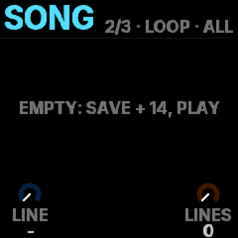
Tap SAVE on TRACKS for the SONG pages. SONG 2/3 lists the song's lines: pick a LINE and set which pattern plays and for how many bars. The Song tab in the editor does the same with a mouse.
Task
Use your own samples
Load any audio file into one of four slots (USR1–4), then play it as an instrument, a drum kit, or a sliced break.
Connect the FM-1 and open the editor's Samples tab.
Choose how it plays: as an instrument across the keys, as a 16-pad kit, or as a BREAK cut into slices. Then choose the file, or record one from your computer's input.
Trim it with START and END. For a break, cut it: AUTO puts a slice on each hit, GRID cuts equal slices, or double-click to add your own cuts.
Send to the FM-1. A break can go straight onto a synth track (it plays with the SLICE engine) or onto the drum track as one of YOUR KITS, with a pattern that plays the break back as it was.

Play slices on the FM-1
On a synth track, pick BREAK 16, CHOP 8, REVERSE or USR SLICE from the FX category. Each key plays a slice, lowest first. At 120 BPM, playing the 16 slices of BREAK 16 in order gives the bar back. Then rearrange them in the sequencer.
| Value | Does |
|---|---|
| SRC | The built-in break, or your slot USR1–4 |
| DIV | 4, 8, 16 or 32 equal slices, AUTO (one per hit), or EDIT (your own cuts) |
| MODE | ONE plays the slice to its end, GATE while held, LOOP loops it |
| PTCH, REV | Faster and higher, or backwards |
DX7 voices
The FM6 bank tab loads classic DX7 sounds (.syx files). Save the bank to the FM-1 and they show in SOUNDS, category DX7.
Task
Back up and restore
Open the editor at isod89.github.io/sloop3-fm1/editor.html in Chrome or Edge, connect the FM-1 by USB and press Connect.
Open the Projects tab.
Press BACK UP EVERYTHING. Your project and your 32 sounds download as one
.s3bfile. Use RESTORE to put a backup back on the FM-1.
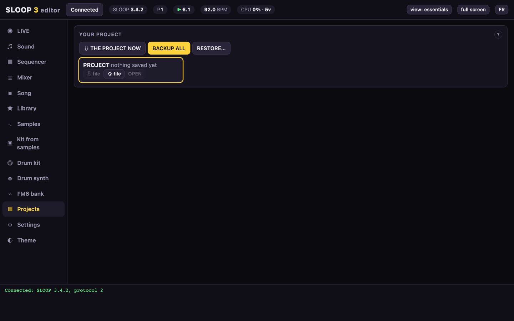
To keep several projects, save each as a file (.s3p) from the same tab and open any of them later. The LIVE tab's set list plays saved projects one after another.
Web editor
Editor tour
The editor runs in Chrome or Edge, on a computer, with the FM-1 connected by a USB data cable. Nothing to install. Open the editor and press Connect. Each card has a ? that explains it, and view: essentials hides the advanced controls.

| Tab | Use it to |
|---|---|
| LIVE | Perform: patterns, scenes, faders, punch-in effects, a set list, and record the set as a WAV |
| Sound | Edit every value of a track's sound as knobs, browse sounds, randomise |
| Sequencer | Draw notes in a piano roll, set velocity and conditions, import and export MIDI |
| Mixer | Levels, pans, sends, and the shared delay, reverb and chorus |
| Song | Edit the song line by line |
| Library | Name, file and reorder your 32 sounds and 16 favourites |
| Samples | Load, trim, record and slice your own samples |
| Drum kit, Drum synth | Tune kits, build your own synthesised kits |
| FM6 bank | Load and edit DX7 voices |
| Projects | Back up, restore, keep projects as files |
| Settings, Theme | Every setting from the menu and MIDI pages; your own screen colours |
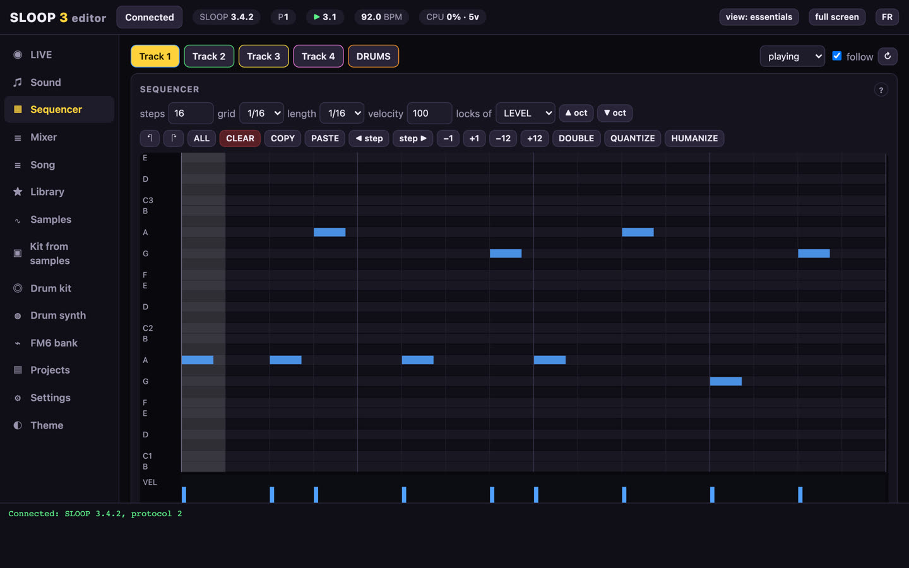
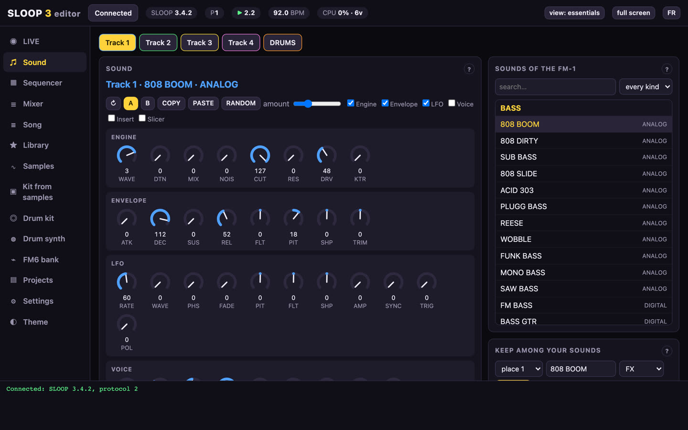
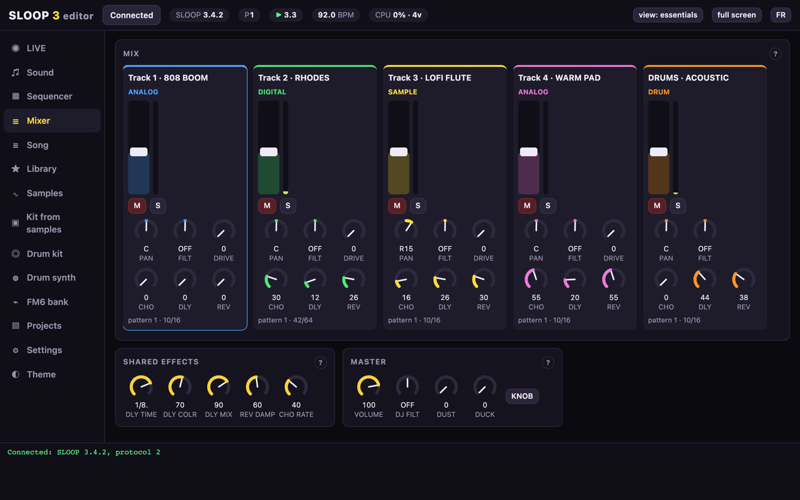
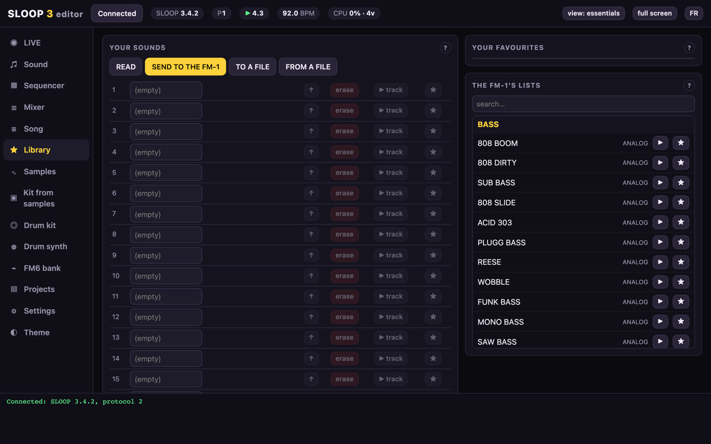
Space play/stop, Shift+R record, ← → track, ↑ ↓ octave, Esc panic. The computer keyboard plays the FM-1's keys.
When the editor sends a project, sample or bank, the FM-1 shows EDITOR BUSY and won't save or load until it's done. Don't unplug the cable halfway.
Glossary
| Arpeggiator | Plays the notes of a held chord one at a time, in rhythm |
| BPM | Beats per minute: the tempo |
| Chain | Patterns set to play one after another |
| DIV | How long one step lasts (1/16 means a sixteenth note) |
| Engine | The kind of synthesis behind a sound: analog, FM, sample, and others |
| Envelope | How a note's volume (or filter) rises and falls over time |
| Fill | Steps that only play while FILL is on, for drum fills |
| Kit | The drum track's 16 sounds |
| Layer | What a button does while held: the keys and knobs change job |
| LFO | A slow wave that moves a value up and down |
| Nudge | Moving a note slightly off the grid, for feel |
| Overdub | Recording on top of what's already there |
| Pattern | One loop of steps for one track. Each track has 8 |
| Punch-in effect | An effect that plays only while you hold a key |
| Quantise | Snapping notes to the nearest step |
| Ratchet | A hit repeated 2–4 times within one step |
| Send | How much of a track goes to a shared effect |
| Step | One slot in a pattern; by default a sixteenth note |
| Swing | Delaying every other step for a shuffled groove |
| Track | One instrument part. SLOOP has 5 |
Appendix
Install SLOOP 3
You need the FM-1, a USB data cable (some cables only charge), and Chrome or Edge on a computer.
- Open the installer at isod89.github.io/sloop3-fm1. It guides you through five steps.
- It checks for m-bootloader, a small safety program that checks the firmware before it starts and opens a recovery menu if an install fails. If it's missing, install it once with M-Flasher, which backs up your FM-1 first.
- Switch the FM-1 off, then on while holding PLAY. Choose MIDI MODE, connect USB and press Connect.
- The page backs up the FM-1's whole memory to a file. Keep it.
- Install. It takes about a minute, then the FM-1 restarts on SLOOP 3.

Nothing is erased until the whole package has been checked. If an install stops halfway, the FM-1 opens m-bootloader's menu at the next start: install again.
Rescue and recovery
| Problem | Do |
|---|---|
| The project won't open or crashes at start | Switch on holding OCT− (RESCUE). PLAY starts an empty project; your saved one is kept. HOME + key 1 brings it back |
| Install again, or an install was interrupted | Switch on holding PLAY, choose MIDI MODE, and run the installer |
| Buttons or knobs respond wrongly | Switch on holding OCT− and OCT+ to calibrate |
| Drums sound thin on the speaker | Menu, AUDIO, SPEAKER LOWCUT ON |
| Battery low | The last of three bars in the top-right corner blinks red under 15 %. Plug in USB to charge |
Coming from SLOOP 2.8
SLOOP 3 plays like SLOOP 2.8.5: the same buttons, layers and gestures, with a new sound engine, a fifth track (a fourth synth), 8 patterns per track and up to 128 steps. At the first start it reads your SLOOP 2.8 sections, sounds, samples and settings without changing them. To go back, restore the backup you made before installing with M-Flasher. Details are in the full changes guide.